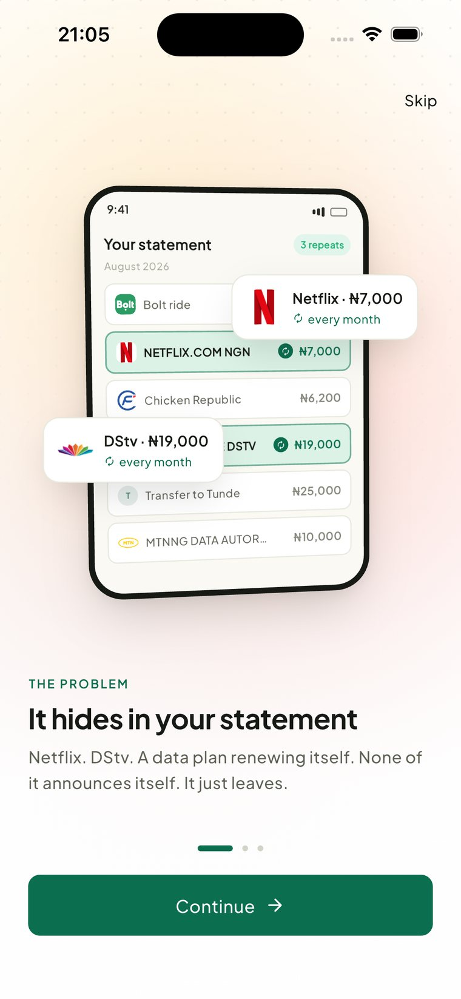
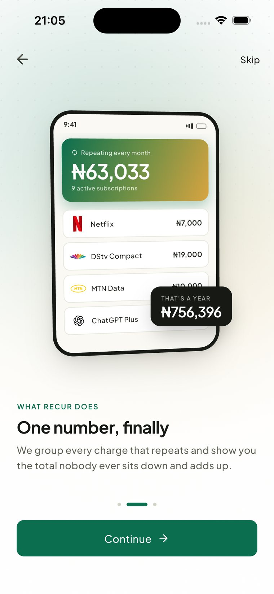

Stop finding out in a debit alert.
Recur reads your bank statement and shows you every charge that repeats, before the next one lands.
Read-only access. Recur can never move your money.

None of this shows up as “Netflix.”
Nigerian bank statements narrate every charge in bank-speak, not brand names. Three real lines, and what they are actually hiding.
Then there is everything else.
Recur sorts every debit into a category you can actually budget against, so one month is one number made of parts rather than four hundred lines.
Every one of those was a raw bank narration before Recur read it. Get a category wrong and you fix it once, and every future charge from that merchant follows.
Three steps. Nothing to maintain.
No manual entry, no spreadsheet you will abandon in a week. Recur does the reading, you do the deciding.
Connect a bank
Link your account in under two minutes through Mono, a licensed open banking provider. Recur never sees your login.
We find the pattern
Recur scans your history for charges that repeat: same merchant, close to the same amount, on a rough schedule. Two matches is enough to flag it.
You take it from there
Get a heads-up before the next one lands, and mark anything cancelled so your total adjusts instantly.
Your statement, made legible.
One number, finally
Every charge that repeats, grouped into the one total nobody ever sits down and adds up themselves.
It hides in your statement
Netflix, DStv, a data plan renewing itself. None of it announces itself in your transaction list, so Recur reads every line for you.
Warned, not surprised
A heads-up days before each renewal lands, with the exact steps to cancel if you are done with it.

We can see it. We cannot touch it.
Recur connects to your bank through Mono, a CBN-licensed open banking provider used across Nigerian fintech. That connection is read-only by design.
- Your login stays yours You authenticate on Mono's own page. Recur never sees or stores your bank credentials.
- No way to move money No transfer, payment, or withdrawal capability exists in the connection. Not now, not later.
- Leave whenever Unlink any account, or delete everything Recur holds on you, in one tap.
Read-only access, licensed via Mono
Get early accessBe the first to see your ledger.
No spam. One email, when we open your city.